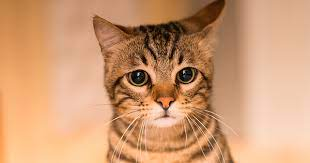

Perro
Perro
En esta pagina se realiza ayuda a distintos tipos de animales
junto a la organizacion de la ONG, en estos momentos estamos
centrandonos mas en los Gatos y Perros, lo cual los cuidamos
y los dejamos listos para la adopcion voluntaria, en esta pagina
encontraras a distintos peludos junto a sus hojas de vida.
 gato